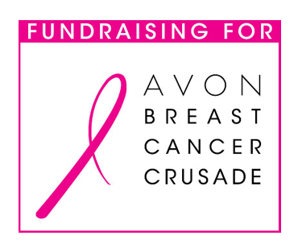
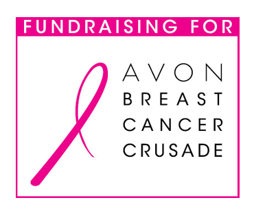

What is it?
- Every 13 minutes, a woman dies from breast cancer.
- 1 in 8 women will be diagnosed with breast cancer.
- 40,000 women will die of breast cancer this year.
Think Pink Week
Thursday, October 21 — Boob Cookie Decorating Day with Sigma Lambda Gamma!
Diag — 10am–3pm
Join us on the Diag during the day to decorate boob-like cookies in support of Breast Cancer!
Friday, October 22 — Think Pink Food Festival
East Hall–Psychology Atrium — 10am–3pm
Stop by and grab a quick snack in between classes! Tickets are $5 for a plate of food and you will be given two chances to enter in our annual raffle! Pre–sale tickets will be sold for $4 and four raffle tickets will be given. SO BUY EARLY! Tickets will be sold at UAAO and MGC. You can also contact a sister if you are interested in buying. The first 60 people that show up will be given a coupon for free chips or fries with a purchase at @BURGER!
Prizes include:
- (4) $25 gift card to SADAKO
- (5) Coupon for a free entree at UNIVERSITY CAFE
- (5) Collider gift certificate from ROD'S DINER
- $15 Gift Card to BTB Burrito
Satuday, October 23 — Think Pink Club Party
Necto Nightclub — 10pm–2am
Tickets are $5 and will be sold at BOOB COOKIE DAY, THINK PINK FOOD FESTIVAL, UAAO, and MGC! You can also contact any sister for tickets. Come dressed to impress in your best pink outfit!
Avon Breast Cancer Crusade
The Avon Breast Cancer Crusade raises funds and awareness for breast cancer research and to advance access to care, with a focus on the medically underserved. From its launch in 1992, Avon’s Global Breast Cancer Crusade has expanded to more than 55 countries and by the end of 2009 had raised and awarded more than $640 million. Grants are made in five areas: breast cancer education and awareness, screening and diagnosis, access to treatment, support services and scientific research. The largest source of funds for the Avon Breast Cancer Crusade is the Avon Walk for Breast Cancer.
The Avon Walks are non–competitive weekend fundraising walks for all fitness levels. Since the launch of the series in 2003, more than $320 million has been raised through the dedication of over 120,000 participating women and men. The Walks take place in 9 cities, covering 39 miles in two days, and raise awareness and funds to fight breast cancer.
Progress has been made but there is still a new diagnosis of breast cancer in the U.S. every 3 minutes. The Avon Foundation for Women supports research to accelerate knowledge about the causes, diagnosis, treatments, and ways to prevent breast cancer. It works to facilitate research collaborations and to identify and fund new research directions. The Foundation also supports efforts to ensure the best quality of care for all, regardless of insurance status or ability to pay.
University of Michigan, alpha Kappa Delta Phi 2010-2011
Layout © Maria Lee 2010